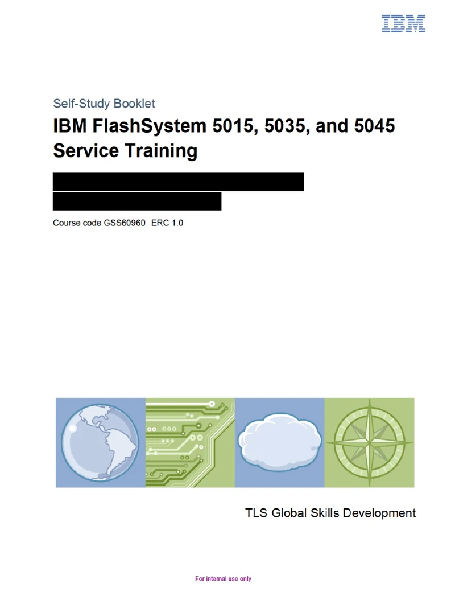
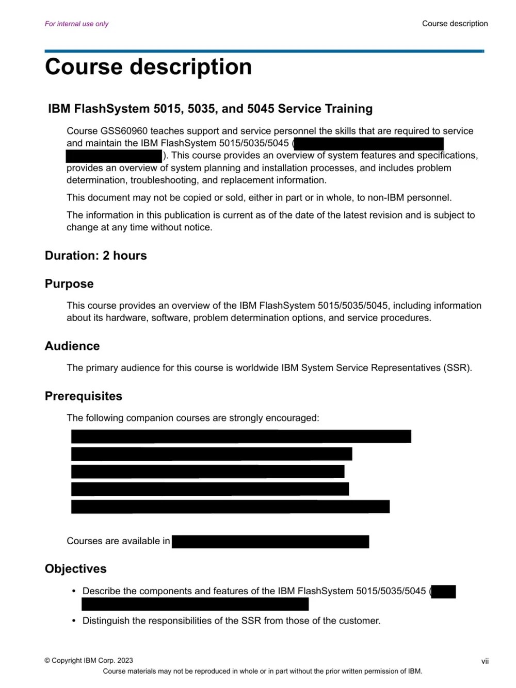
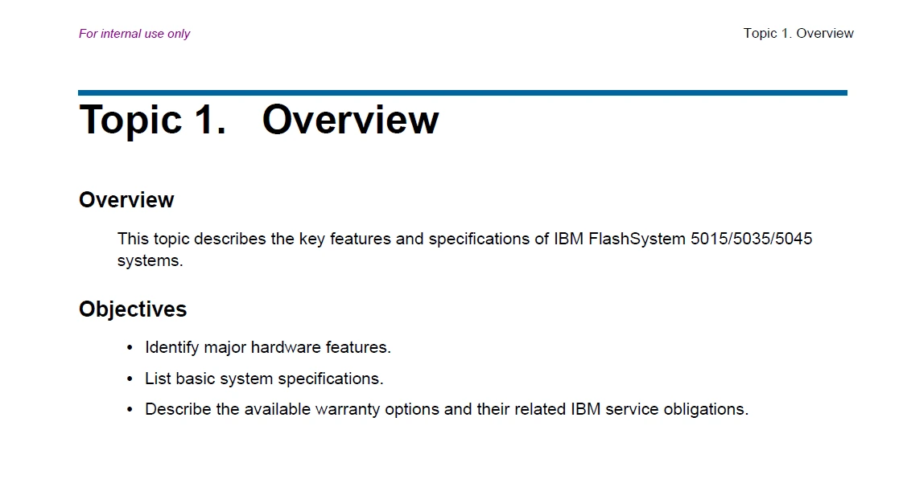
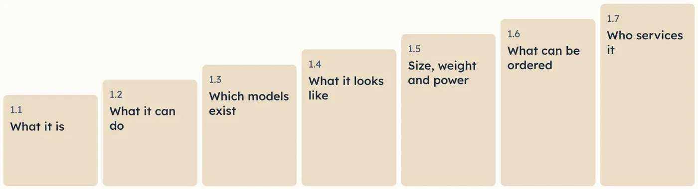
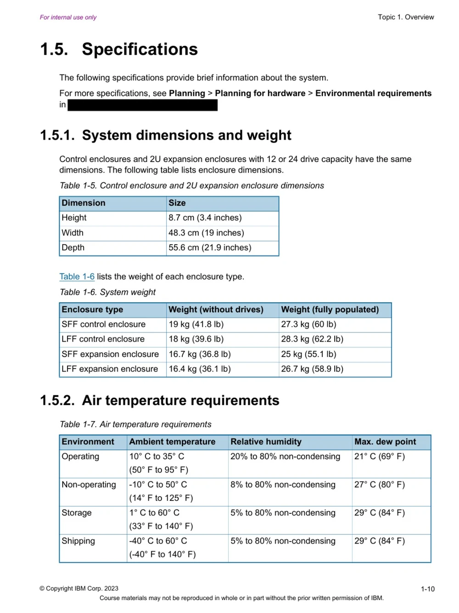
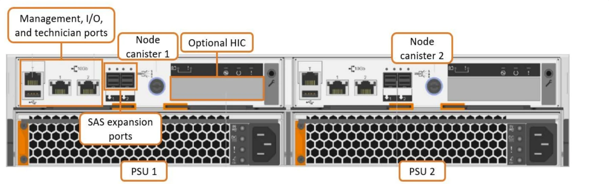
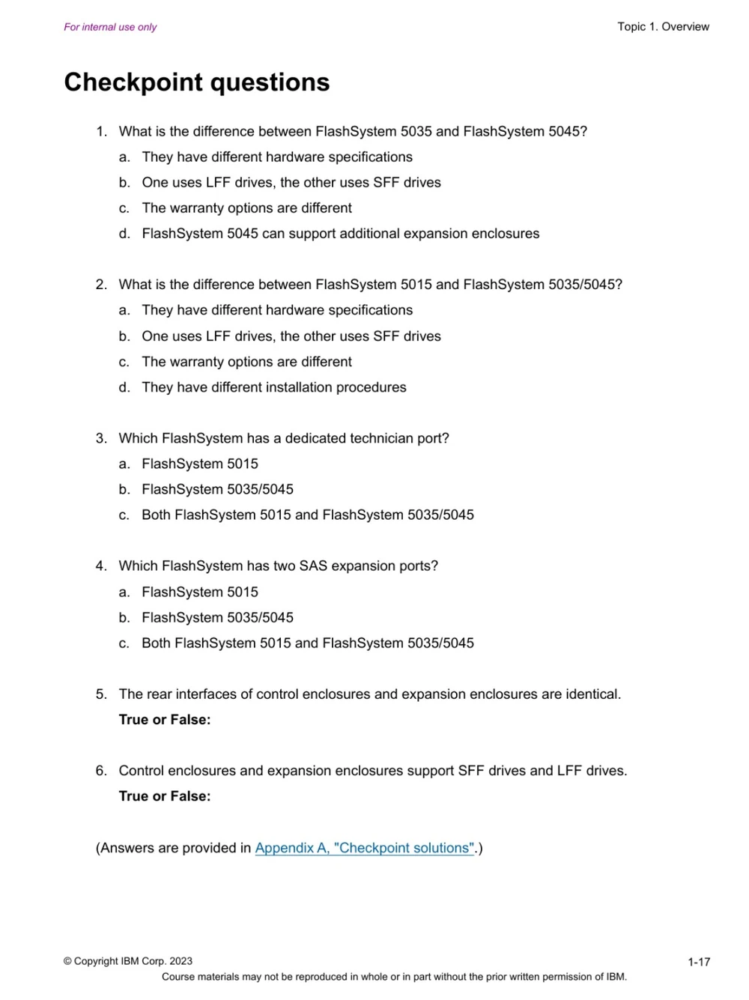

Writing case study: IBM hardware service training
This page outlines a real writing project I completed at IBM. This hardware service training content was used internationally by hundreds of service engineers to learn about this new IBM system.
Some features of this sample
- A well-defined audience: the course defines its users, IBM hardware service representatives worldwide, before anything else
- Clear objectives: every topic states what the learner will be able to do, and checkpoint questions measure it
- Style guide consistency: this content looks and feels like all other IBM content because it follows the IBM Style Guide
- Consistent layout and structure: every topic follows the same pattern, so that learners can easily follow the flow of the document


Audience, purpose and objectives first
The course description opens by defining the audience (IBM System Service Representatives worldwide), the purpose, and the objectives.
For learners: they know straight away whether the course is for them and what they will be able to do by the end.


Objectives drive the design
Each topic opens with a topic overview and its objectives. The objectives guide what each section teaches and give the checkpoint questions something to measure.
For learners: a clear target before they start, and a way to measure their own progress.


One new idea at a time
Topic 1 opens with a one-sentence definition. Each section then adds one idea: what the product is, what it can do, which models exist, what it looks like, and who services it.
For learners: a new and complex product, built in steps they can follow.


Written to the IBM Style Guide
Abbreviations are spelled out on first use, every list has a full-sentence introduction, cross-references give number and title, and headings use sentence case.
For learners: terms and formatting that match the rest of IBM's documentation.


Labelled images build familiarity
A photograph or image of each part is shown, with callouts highlighting key features.
For learners: they recognise each part and can locate relevant ports when they are working with real hardware.


Checkpoint questions confirm learning
Every topic ends with a knowledge check about key points related to the topic objectives. Answers are in the appendix so that learners can review their progress.
For learners: confidence before they service real hardware, and a clear signal of what to review.

